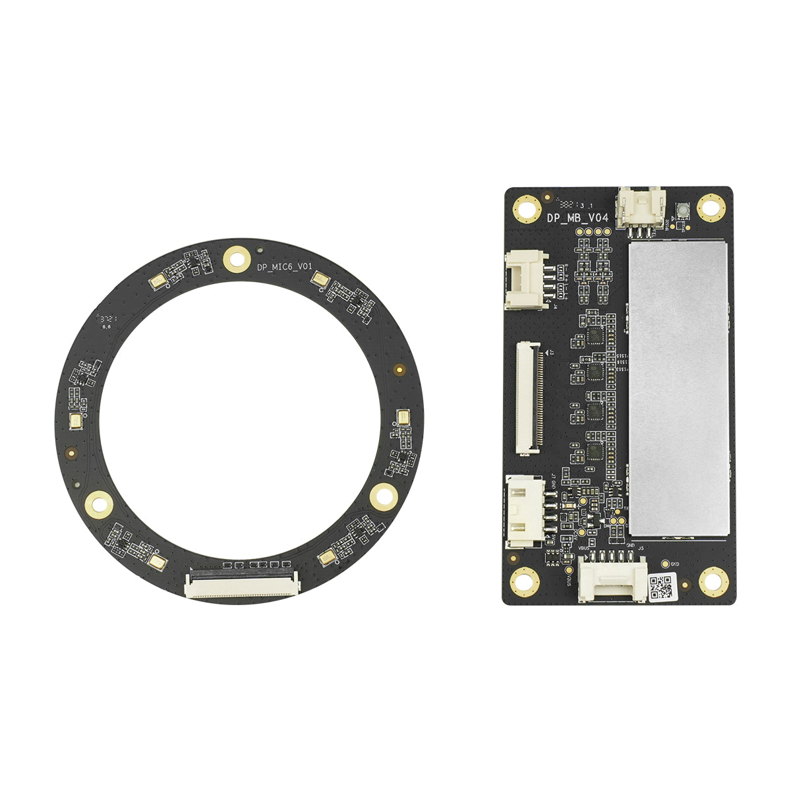
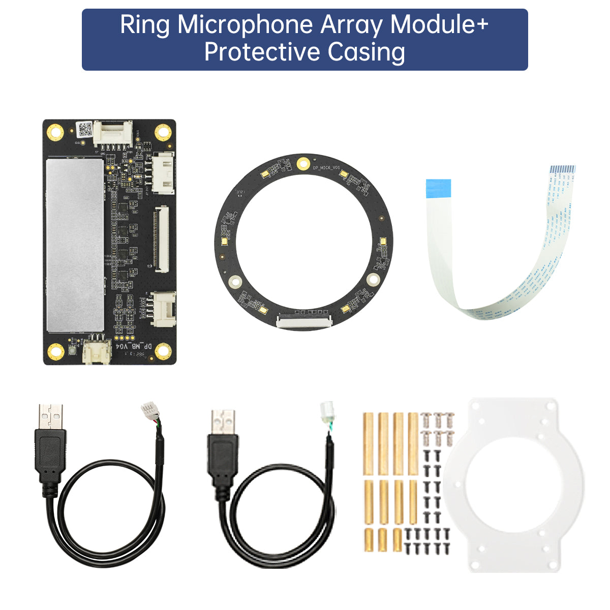
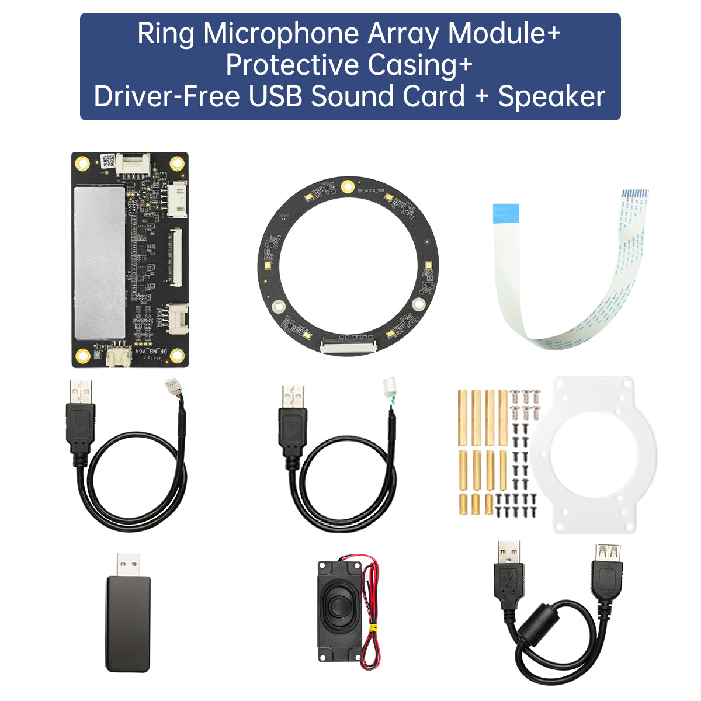
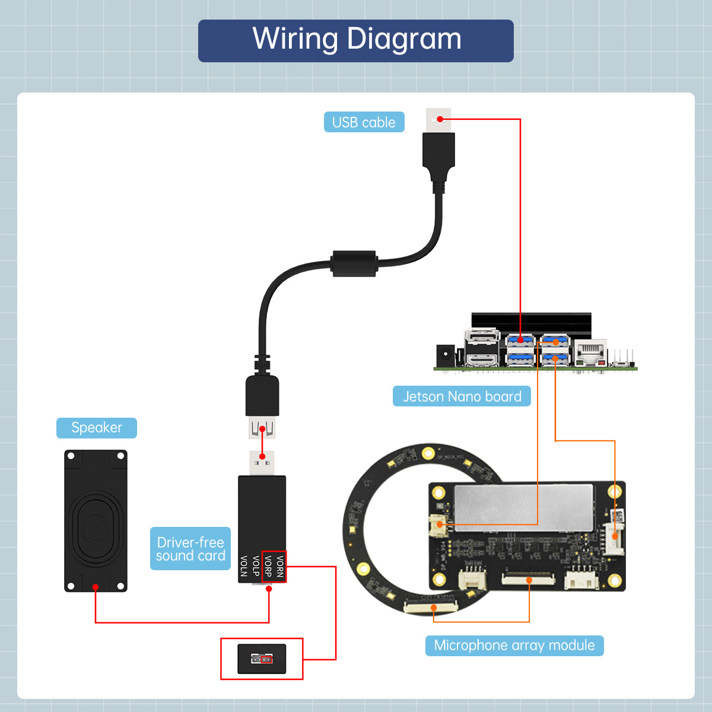
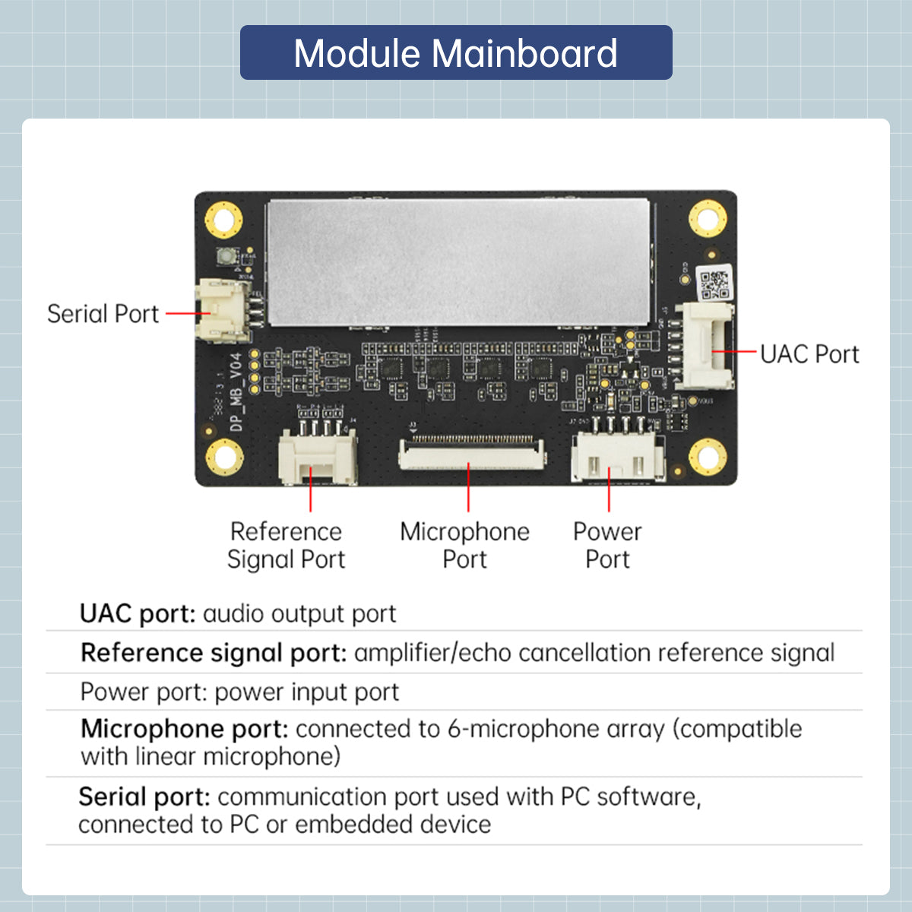
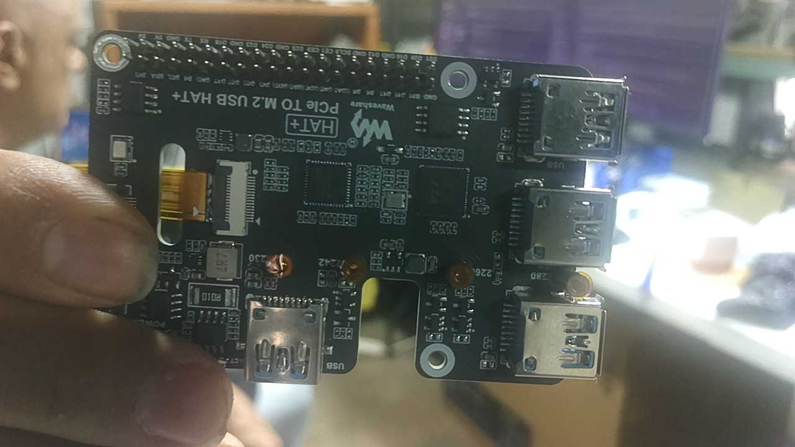

Purpose: documents the ArmPi Ultra STM32 controller card + Raspberry Pi 5 (16 GB) + the right-angle USB cable and adapter selections chosen to keep the bay compact while carrying USB power in / control, camera stream (OAK-D S2), and voice (iFLYTEK far-field mic array). The Pi5 runs headless (Wi-Fi only, no monitor / no Ethernet in the production config).
Scope boundary: the bay's thermal / acoustic
/ structural design (fence CAD, PIR mounts, bay-fan mount +
wiring, PSU + AC rocker) is owned by a separate Electronics-bay
agent and lives at memory/project_bay_thermal_acoustic_design.md
+ Power/Compact_UPS_Power_System_HiWonder_RPi5.md.
This doc only covers the STM32-Pi5 stack + the cables/adapters
that live between them and their external interfaces.
Related docs:
Lumi_Wand_Integration.md
§5.1 — split-rails power topology (bay D-1459 distribution block →
wand 13.8 V + STM32-DROK 7.5 V)Lumi_Wand_Integration.md
§10.2 — end-to-end power bay wiring diagramPower_Bay_Design.md
§11.3 — bay 13.8 V distribution-block assembly (HL-PBB block of
record, D-1459 alternate)Power/Compact_UPS_Power_System_HiWonder_RPi5.md
— PSU, DROK, battery, fuse specsModular design with a high-performance STM32 processor + 2 bus servo ports + buzzer + customizable keys + I²C and GPIO breakouts. Acts as the bay's power hub — takes up to 12 V in (Hiwonder's rating, which also binds every peripheral on the board's input rail; run at 7.5 V, Hiwonder's own adapter voltage; until the HV servo swap the same input feeds the servo bus, after it the servos get their own 11.1 V rail, see Servo and board power below), and provides regulated 5 V @ 5 A out to feed the RPi5 and downstream USB peripherals.
STM32 controller card photo — drop at
docs/images/electronics_bay/armpi_ultra_stm32_controller.pngwhen captured.
Parameters (per vendor spec sheet):
| Item | Value | Item | Value |
|---|---|---|---|
| Power input | up to 12 V (Hiwonder; also binds every peripheral on the input rail; held at 7.5 V on every build, see Servo and board power below) | LED | 2 |
| Bus servo port | 2 | I²C port | 2 |
| GPIO port | 2 | Buzzer | 1 |
| Custom key | 2 | USB port | 1 |
| 5 V 5 A external power port | 1 (USB-C, powers RPi5) | Controller switch | 1 (on/off) |
| Installation hole distance | 49 × 38 mm | Product size | 73 × 65 mm |
Ports (per the vendor callout diagram):
Power flow through the STM32 board (bay-level context):
PSU 13.8 V → D-1459 A2 → DROK buck (7.5 V, 8 A rated) → STM32 power port │
▼
STM32 board internal 5 V regulator
│
▼
5 V 5 A external USB-C output
│
▼
RPi5 USB-C power input (§3.2)
│
▼
Downstream 5 V loads on the Pi5:
- NVMe drive
- OAK-D S2 (via §3.1)
- iFLYTEK mic array
- PIR modules (via GPIO)
- Wand tether +3.3 V (via G469)🎯 Distribution block — design of record 2026-09-29: YRYAR HL-PBB-2-6-MINI (block of record; Ultra's block) or CZH-Labs D-1459 dual-bus distribution module, ferrule-based, zero modification, one per robot on the power-bay carrier (spec:
Power_Bay_Design.md§11.3.2). Wiring + port map:Power_Bay_Design.md§11.3; part spec:Electronics_Assembly_Guide.md§1.4.
Servo and board power (operator, 2026-11-12): the
STM32 board passes its input to its bus-servo port with no series diode
(Halo's servos read within 0.05–0.15 V of the board input; at no load,
port 1 reads the input terminal), so whatever feeds the board also feeds
the servos unless the port's V+ is cut out of the path. The path
is resistive: Halo's board at ~12 V with a 2.8 A resistive load
on port 1 (2026-11-12) dropped ~0.7 V input terminal → port (~0.24 Ω;
~0.56 V on the + side, ~0.13 V on the −; slide switch not warm, so
likely trace; the port reading includes the load's plug contact).
Only port 1 carries load: port 2's voltage collapsed
under the same load with no current, so the servo chain always goes on
port 1. The same 12 V test ran the board, Pi and 5 V converter clean
(get_throttled 0x0, EXT5V 5.16–5.19 V, 7 power-ups under
load incl. 5 back-to-back; nothing warm); it was 2.8 A, so nothing above
3 A is proven. Hiwonder rates the board's input at up to 12
V, and that ceiling also binds every peripheral on the board's
input rail; there is no regulation between the input and the servo
ports. Hiwonder has not tested the board with six HV
servos at 11.1 V and cannot confirm it handles their combined peak
current, so a port-1 load test on Halo HV's board decides that. Still
open: its 16 V input tantalums (under the child board) sit at 69 % of
rating at 11.1 V, past the common 50 % derating for MnO2 tantalums
(polymer parts allow ~80 %); their marking decides it, and surviving
seven inrushes does not prove long-term life. The CUR6UA regulator is
unidentified. Every LV build holds the board at 7.5 V,
Hiwonder's own adapter voltage (7.5 V 6 A, read off the stock adapter's
label). After the HV swap the board runs at the HV setpoint, because the
servos are fed through it.
get_throttled 0x0, EXT5V 5.16 V); Ultra ⏳
measured 9.11 V on 2026-11-02, re-set per Power_Bay §4 power-up;
Nova sets 7.5 V at first power-up.overvolt_v = 8.4 V, which sends the arm to rest;
at 11.1 V every servo reads overvolt, so the HV launch config must raise
it to 12.0 V or the arm rests the moment HV is powered. It stays under
the board's 12 V maximum only if the setpoint stays ≤ ~11.6 V.get_throttled stays 0x0,
vcgencmd pmic_read_adc EXT5V_V stays ≥ 4.9 V, and the STM32
does not reset; (d) the same on battery (AC pulled). Instruments:
multimeter + inline USB-C meter only.Lumi_Wand_Integration.md §10.5.2).Camera: Luxonis OAK-D S2 — stereo depth camera + 12 MP central RGB + on-device AI accelerator (4 TOPS total, 1.4 TOPS for AI). Mounted at the arm end; carries the vision pipeline for LumiAI's spotlight/tracking use case.


Key camera specs (per Luxonis product page):
Also see memory/project_oak_onboard_encoding.md
for the low-bandwidth MJPEG encoding config
(i_low_bandwidth:true +
i_low_bandwidth_profile:4) that cut depthai CPU from 91 % →
40 % — production-recommended default.
Cable to the Pi5: GELRHONR Right / Left Angle USB Type C Cable — 90° 18 W Fast Charging USB-A to USB-C, Black-Left, 1 m — USB 3, 5 Gbps.

Cable: Right Angle USB C to USB C Cable, 0.5 FT (6 inch) — Short, 3-Pack, 65 W Fast Charging.


Cable: chenyang Reversible USB 3.1 Type C USB-C Angled to 90 Degree Right Angled USB 3.0 Cable, 30 cm, Type-03 — 5 Gbps. In service on Ultra (operator checked the cable, 2026-10-30).
/dev/stm32_ultra)
distinct from its 5 V 5 A power OUT port. That control port connects to
a Pi5 USB-A port (Pi5 acts as USB host, STM32 as USB device).project_yahboom_dual_ch340_devpath.md)
require devpath-pinned udev rules. Fleet-standard
practice — verify per-unit at bring-up.⛔ iFLYTEK DROPPED as a fleet/production part (operator 2026-11-02): no more kits, not for new builds. The one kit already owned stays in use on Ultra or Halo. Production replacement not chosen. This section stays valid for the one owned kit; nothing here is to be bought or built into new robots.
The shipping hardware (HiWonder lessons) is a two-board set — the R818 noise-reduction board (90 × 50 × 1.2 mm, 4× Ø3.5 on 80.0 × 40.0, shield can H3.5 / back H4 / tallest connector H6, DC 5 V 250/300/400 mA min/typ/max) plus the ring 6-mic array (annulus Ø79.5 OD / Ø60 ID, 6× SPA1687LR5H-1, 3.3 V MICBIAS 0.8 mA from the R818), joined by a short FFC (~115 × 12 mm nominal — measure on receipt) — and it needs TWO USB links: a serial cable (JST → USB-A, CH340; JSON control + wake/DOA events) and a UAC cable (JST → USB-A; USB Audio Class device).
Hardware ON HAND (operator, 2026-10-13, kit photographed) — the FULL bundle variant, hiwonder.com far-field-microphone-array-module ("Ring Microphone Array Module + Protective Casing + Driver-Free USB Sound Card + Speaker"): R818 board + ring 6-mic array + ring-only white protective casing + mic FFC (AWM 20624 ribbon, visibly longer than the 115 mm nominal — measure before any slot design) + serial CH340 USB cable (JST→USB-A) + UAC USB cable (JST→USB-A) + brass standoffs + screws (the R818's own mounts — its 4× Ø3.5 holes; the casing carries only the ring) + HiWonder "USB TO AUDIO" driver-free sound card stick (PWR LED; SPK−/SPK+ speaker terminals; RLN/RLP = the AEC reference pair that wires back to the R818's reference port) + a small speaker + a ferrite USB-A extension. The CableCreation extension is also on hand (operator-confirmed: CableCreation Short USB 3.0 Extension Cable 1FT, Left Angle, Space Gray 0.3M). The sound-card stick is a third USB device (speech OUTPUT path), not the UAC link; the mic's UAC link is the plain JST→USB-A cable.
🚩 USB count (vendor wiring diagram): mic-only POC = 2 ports (serial + UAC — on Pi native ports at Phase 7.5). Full voice I/O adds the sound-card stick = 3 ports → all three on the HAT from Phase 7.6 (§3.6). The speaker + AEC loop (stick RLN/RLP → R818 reference port) is all in-kit; no parts to buy.



Pi5 port assignment (Halo):
Phase 7.5 POC (interim, pre-HAT): UAC cable → blue USB3 #2 via the CableCreation extension (UAC traffic is USB 2-class, so blue is not required — it is the reserved port); serial CH340 cable → black USB2 #2. Pre-HAT, Halo's Pi5 USB is fully allocated (blue #1 OAK-D S2 §3.1, blue #2 mic UAC, black #1 STM32 §3.3, black #2 mic serial).
End state (Phase 7.6 on): ✅ OAK-D + iFLYTEK (+ sound-card stick) on HAT ports (§3.6, operator 2026-10-27); any further USB device needs a hub. HAT spec, bay-fed 5 V and INA219: §3.6.
udev: the mic serial is a second
permanent CH340 beside the STM32's — devpath-pinned
/dev/iflytek_halo is mandatory (see
Electronics_BringUp_Plan.md; a wrong-port open resets the
STM32 and snaps the arm).
Power decision (2026-10-13): bus-powered. Both
cables' VBUS carry the R818's 250/300/400 mA total; the independent
power port stays unused. No topology win in feeding it separately —
every 5 V source on Halo (Pi VBUS, G469 5 V, STM32 I²C-port 5 V)
originates from the same STM32 internal 5 V regulator, so the load lands
there either way
(Power/Compact_UPS_Power_System_HiWonder_RPi5.md Power
Performance). Two Pi-side checks instead:
usb_max_current_enable=1 must be set in
/boot/firmware/config.txt (the STM32 5 V 5 A USB-C does no
PD negotiation, so the Pi otherwise caps aggregate USB VBUS at 600 mA —
the OAK-D alone exceeds that), and the mic cables get an
inline-USB-meter measurement at POC. Fallback if the 1.6 A aggregate
measures tight: feed the independent power port from the STM32's spare
I²C-port 5 V header (1 A max), 22 AWG pigtail — and bench-verify whether
the R818 then stops drawing VBUS (vendor silent; the data pairs stay
connected regardless).
Pass-through (EB aluminum top cover → Pi5 below): the ring and the R818 both mount on the cover top (on the carrier below), so the ring↔︎R818 FFC never crosses the cover. Only the USB runs penetrate, through the data lane of the cover opening (below): the small JST ends go UP (the XH-class JST plug is ~12.4 × 8 mm, one plug at a time); the **USB-A overmoulds (~16 × 8 mm) and the serial cable's CH340 dongle stay BELOW deck** (keeps the CH340 hash under the metal plane, away from the analog ring). Grommet/edge protection mandatory in aluminum. Dress the mic runs away from the OAK-D USB3 cable.
Cover grounding + vibration isolation: bond the anodized cover to the star ground (distribution-block common point) at one point with a star washer through the anodize — unbonded it is floating metal under an analog mic ring; do not also ground it through the R818/casing screws (single-point only). Mount the casing on elastomer (silicone grommets/O-rings or VHB/foam): the cover sits over the Pi5 active-cooler fan and the chassis carries power-bay-fan + servo vibration.
Carrier integration (carrier v5 + R818 shroud V1.1, CAD
2026-10-23, part lumi_halo_mic_carrier): one PETG+
plate 110.5 × 110.9 × 4 lying flat on the
electronics-bay metal cover, bolted through the cover's own 4 corner
holes with 4 × M3 × 8 Torx pan machine screws (304 SS,
GB2672 kit) into the bay plates' threaded M3 top flanges (no standoffs,
no nylon). Ring at (231.44, 88.0) on 3 posts (self-tapping screws);
R818 above it, clamped by the clear printed shroud (4×
M3 × 16 through its hollow columns). Speaker 70 × 31
along the −Y edge on 4 posts with rubber washers, lead-tab notches both
ends — sealed-back, cone-up, bench-confirmed. The sound-card
dongle lives ON the carrier, in a walled bay UNDER the speaker,
a 1 mm foam strip between them (operator, 2026-10-16). Hardware + build
order: Assembly
Guide §16; print settings: 3D
Printing Guide §3.4.
The cover's 25.8 × 48.4 opening is DIVIDED by a 2 mm web at Y 56 (moulded into the carrier lip):
Sound-card dongle: ON THE CARRIER, in the walled bay UNDER the speaker (operator, 2026-10-16), a 1 mm foam strip between the dongle and the speaker back. Its USB run goes DOWN the data lane to the Pi5 (HAT at 7.6) on a right-angle USB-A M → F extension (to order; angle must point the cable toward the data lane — the kit's straight 12" is the V1 stopgap; pick a right-angle part with a ferrite or add a clip-on, since this is a USB device living beside the analog ring). SPK± and RLN/RLP are carrier-local — NO analog pair crosses the cover; the three USB runs (CH340, UAC, dongle) are what cross.
Orientation in service (operator, 2026-10-13): Halo hangs UPSIDE-DOWN from the ceiling — the EB cover and this carrier face DOWN into the room. Two consequences:
Acoustics are otherwise improved by the inversion (ring + speaker cone face the room). The mechanical side is unaffected — everything on the carrier is positively fastened, nothing gravity-seated (same note in the CAD part header, 3322f10).
Mic-stack run table (phase column is load-bearing — M1/M2 move at Phase 7.6):
| Run | Path | Dress | Phase |
|---|---|---|---|
| M1 serial (CH340) | R818 → data lane ↓ → Pi black #2
(/dev/iflytek_halo, udev-pinned) |
with M2, data lane only | 7.5 on Pi native; → HAT port at 7.6 |
| M2 UAC | R818 → data lane ↓ → Pi blue #2 via the CableCreation extension | with M1 | 7.5 on Pi native; → HAT at 7.6 |
| M3 dongle USB | dongle (carrier, under the speaker) → data lane ↓ → right-angle USB-A M-F extension → HAT port | data lane, with M1/M2 | 7.6 (HAT-gated — full voice I/O) |
| M4 SPK± | dongle → speaker lead tabs — carrier-local (both on the carrier) | twisted pair, never crosses the cover | with M3 (7.6) |
| M5 RLN/RLP (AEC ref) | dongle → R818 reference input — carrier-local | its OWN twisted pair, no shared tie points with data | with M3 (7.6) |
Cover grounding follows the one-point bond scheme above — the printed plate is insulating; the bond point stays on the cover, chosen knowing the M3 extension's shield bonds cover-side metal to the HAT through its connectors.
HiWonder's reference mount (photo below): the acrylic carrier plate stands on short standoff feet, the ring mounts on the plate, and the R818 rides ABOVE the ring's centre on the tall standoffs — a two-deck stack sharing one footprint, FFC looping between decks. That is the kit's intended topside configuration; the Halo carrier keeps the same two-deck arrangement (R818 above the ring) on the EB cover.



![Ring array mic numbering (DP_MIC6_V01): mics 1–6 clockwise from upper-left — 1 top-left, 6 top-right, 2 left, 5 right, 3 bottom-left, 4 bottom-right; the FFC connector is at the bottom edge between mics 3 and 4. The DOA 0° convention is NOT documented against this numbering — establish it empirically at the Windows smoke test and mark the carrier (BringUp Phase 7.5 step 1); that mark is a REFERENCE only — the service zero is calibrated after mounting, hanging/inverted, where handedness mirrors (orientation note above).](images/electronics_bay/iflytek_mic_array_product_4.jpg)
Extension cable: CableCreation Short USB 3.0 Extension Cable, 1 ft (0.3 m) — Left Angle Extender Cord, Male to Female, 90°, Space Gray.

iFLYTEK Far-Field Microphone Array Module (ROS six-microphone voice board):


/voice/angle_deg per Phase 9.5
iFLYTEK integration memory./voice/angle_deg publication over
the USB link.FFC ribbon: MECCANIXITY 10 pcs FFC FPC Flat Flexible Cable, 40 Pin 0.5 mm Pitch A Type 500 mm Long for LCD 3D Printer Camera DVD TV Laptop Audio.
| Board | Waveshare "PCIe TO M.2 USB HAT+" (the EXTERNAL_SENSOR plan's "NVMe+USB HAT") — PCIe over the Pi5's 16-pin FPC. Amazon ASIN B0GJL9R855. |
| Gives | 4× USB 3.2 Gen1 ports + bootable M.2 NVMe 2230–2280, HAT+ EEPROM, onboard INA219 power monitor (§3.6.4), and a 40-pin GPIO pass-through header on top (Ultra-confirmed 2026-10-16; the inverted FPC breakout sits on it, §4 Pi5 stack). |
| Status | Ultra already runs one — ⚠️ on a WALL-powered bench DROK, NOT UPS-backed (operator-confirmed 2026-10-22, after Ultra went dark on an AC drop). Its NVMe root, OAK and WonderEcho all die on any AC loss until the Mus-14 fix in Power_Bay §5a lands. Halo runs one in place of the Geekworm X1001: NVMe boot on the HAT, fed from the Pi's GPIO 5 V until its Mus-14 rail goes in (Bench_Plan_2026-11-02_to_11-06). |
| Why | Pi5 USB is FULLY allocated on Halo pre-HAT (§3.4) and the HAT's 4 ports ride the PCIe lane — ZERO Pi USB ports consumed. The speaker/voice-output phase forces the swap: the sound-card stick is a 3rd USB device. |
| Ports — design of record | ✅ The OAK-D S2 AND the iFLYTEK set plug into the
HAT (operator ruling 2026-10-27: "The OAK-D plugs into the HAT
… as does the iflytek"). Verified live on Ultra the same day: OAK
03e7:f63b at 5 Gb/s on the HAT's VL805,
the mic's CH340 + UAC behind a hub on the HAT, and both native Pi blue
ports empty. Ultra's mic is the WonderEcho today
(operator 2026-11-02); the one owned iFLYTEK kit goes on Ultra or Halo
(robot not chosen yet). The Pi's native ports keep only the STM32 (black
#1, so /dev/stm32_* never moves) and the gamepad dongle.
WHY the OAK is on the HAT (operator): "the oak-d on
the rpi5 usb was too problematic", so the Pi's native USB is the
known-bad home for the OAK and is never its fallback.
Relief valve if the HAT's lane or its 5 V budget gets
tight: move the iFLYTEK (UAC + CH340) to a native Pi 5
port (operator: "we can move the iflytek to the rpi5 port
if need be, remember the stm32 card is on the rpi5 port already").
That frees ~0.4 A of HAT current and a little lane bandwidth; blue #1 /
#2 are free for it, and the move means re-pinning
/dev/iflytek_* (devpath changes). |
| Bandwidth — honest consequence | OAK video and the boot NVMe now share the one PCIe Gen2 x1
lane (~4 Gb/s raw, ~3.2 usable) through the HAT's ASM1182e
switch. In practice: the OAK runs the onboard-MJPEG
low-bandwidth profile (i_low_bandwidth, tens of
Mb/s), and Ultra has run this way since its HAT went in with no
lane-related fault on record. Risk: contention if raw /
depth streams run at full rate while the NVMe takes heavy
sustained writes (e.g. rosbag recording raw video), showing up as OAK
frame drops or XLink timeouts, not as storage errors.
Mitigations, in order: keep the OAK on MJPEG /
low-bandwidth; record compressed, not raw; if still tight, move
the iFLYTEK to a native Pi 5 port (the relief valve above).
Moving the OAK to a native Pi port is not a mitigation
(operator: too problematic there). |
| Power options | Default: the HAT runs from the Pi GPIO 5 V. Its dedicated USB-C POWER input can instead be fed from the power bay, fully offloading the Pi's own input budget — that bay feed is §3.6.2. |
The chain: D-1459 A5/B5 (B5 released by the operator 2026-10-13 — Power_Bay §11.3.3) → 22 AWG / E0508 twisted pair → 3 A ATC inline fuse → MusRock IN (~1.2 A peak at 13.8 V) → C-to-C → the HAT's power-only USB-C.
| Converter | MusRock Mus-14 DC-DC buck (the operator's 2026-10-13 5-pack: "5Pcs DC-DC 3A Buck Step-Down Power Supply Module Dual Type-C USB Output 9V 12V 24V 36V to 5V"), 9–36 V in → FIXED 5 V dual USB-C out (the listing names no trim), 3 A with the bay's external cooling, 30 × 24.8 × 5 mm. Its USB-C source sockets advertise 5 V on CC natively (no pigtail). 5-pack on hand, four spares (Assembly Guide §1). Interim HAT buck until the LM25116 arrives (operator 2026-10-30). ⏳ Meter one unit's real output at the bench, no-load and at ~2.5 A: fixed "5 V" boards often sit at ~5.1 V, and that number decides the interim gate. Not yet in service: Ultra's HAT runs on the bench DROK directly (§3.6.3 gate 1). ⚠️ Naming ledger — three "DROKs" circulate: (1) the bay 9 V DROK buck (STM32 branch), (2) the operator's bench DROK 0–32 V screen supply (feeding Ultra's HAT today), (3) "the drok we bought last week" = this dual-USB-C 5-pack, doc name Mus-14. No second DROK — operator: "we do not have room for a 2nd DROK, period." |
| Planned replacement (🔴 NOT ORDERED: absent from the AliExpress order history, Purchasing 2026-11-02) | LM25116 300 W / 20 A CC/CV step-down board (listing): synchronous, ≈ 61 × 53 × 28 mm (finned heatsinks on both long edges), 4 corner holes (spacing ⏳ caliper), CV + CC trim pots, green screw terminals. CV 5.20 V no-load at the plug, CC ≥ 4 A. Lead: Maixbomr 1 m 18 AWG USB-C → bare wires (B0H1XFWZ32; not found in the 2026 Amazon orders, older pages unchecked), cut to the route, E1008 ferrules. CAD: reserve a carrier spot for it now (the 30 × 24.8 slot is too small). |
| C-to-C cable (D18) | HOTNOW USB-C ↔︎ USB-C, 1.5 ft ≈ 0.46 m, right-angle (listing; on hand) for the interim gate test; route ≥ 0.46 m (measured). Only if it fails the gate: a 5 A e-marked 240 W right-angle C-to-C, ~0.5–0.6 m — candidate Poyiccot 0.61 m (B0CNYR9H17; ⏳ VBUS gauge and price not verified). Expected drop of the 5 A cable (assuming 20 AWG VBUS/GND, 0.61 m, ~20–40 mΩ of plug contacts, ≈ 0.06–0.08 Ω loop): ≈ 0.16–0.21 V at the 2.6 A peak, ≈ 0.08–0.11 V at the 1.4 A mean. From a 5.00 V source that is ≈ 4.80–4.84 V at peak (fails 4.90) and ≈ 4.9 V at the mean; a unit that sits at 5.10 V lands ≈ 4.89–4.94 V at peak (borderline). The HOTNOW (thinner copper) drops more; the interim gate run with it decides, and the LM25116 removes the problem. Right-angle at the HAT end; routed via the base-servo hole with D14/D15. |
| Mandatory prep | Copper heatsink ≥10 × 10 mm on the buck IC — the SMALL square chip, NOT the inductor — thermal tape/pad (✅ on hand: 10-pack 10 × 10 × 4 with pre-applied 3M 8810). At ~14 W out the board wastes ~1–1.5 W; heatsinked, it is rated 3 A with the bay's external cooling. |
| Mount | On the PSU cover beside the G469, with the G469 moved one hole right (operator, 2026-10-13; dry-fit the G469's harness reach before unscrewing anything). |
| Switching rule | Same master-switched bus as the DROK — never separately switched: a late HAT rail = NVMe boot failure (the SSD is the Pi's boot drive and powers from the HAT's USB-C feed, not the PCIe ribbon). |
| Budget | ✅ MEASURED, Pro build with the OAK-D S2 + iFLYTEK + NVMe on
the HAT (Ultra hat_power_logger, INA219,
2026-10-20…26, ~600 k one-second rows of ~50 Hz samples): mean
1.36 A, 50 Hz peak p99 1.82 A, max 2.11 A. Add the sound-card
stick (~0.5 A, speaker phase) → **~2.6 A peak / ~1.7–1.9 A typical**:
inside the Mus-14's 3 A with the bay's external
cooling. Current is not the risk; voltage is:
Ultra's bench DROK (mean 4.985 V) dipped below 4.90 V in 0.62 % of
seconds (worst 4.81 V, during the 10-22 AC-loss event), and the Mus-14
is a fixed 5 V source. That is why the IC heatsink and the gate-1 run
matter; the CV-trimmed LM25116 (planned) carries the margin.
Creator edition (no OAK, no iFLYTEK; phone does voice):
≈ HAT logic + NVMe (+ stick if used): **~0.8–1.2 A typical, ~1.5–2 A
peak**. That leaves ~1 A at 5 V for anything else, too little for a 5–8
W phone, and port 2 is plain 5 V with no PD, so the separate PD
phone charger stands (Electronics 2026-10-27). The STM32 5 V
rail sheds the loads moved to the HAT. |
| Creator edition — 4 TB NVMe option (operator, 2026-10-27; bought with the drive, NOT now) | Drive: one M.2 2280 in the HAT's single 2230–2280 slot. Choose by datasheet peak / active power ≤ ~6 W (≈ 1.4 A at 5 V after the HAT's conversion, the NVMe line of the budget above). DRAM-less (HMB) Gen3 / Gen4 "low-power" drives fit best: the Pi 5 links at Gen2 x1, so a fast drive gives no speed, only heat and current. Single-sided strongly preferred (many 4 TB 2280s put flash on both faces). Heatsink, bought WITH the 4 TB drive: low-profile M.2 2280, ≤ 4 mm total including the pad, aluminium or copper, top-side pad only, held by adhesive or clips. Not rubber bands or anything that wraps under the drive (HAT underside clearance). Fallback if there is no height: a 0.5–1 mm copper or graphene M.2 heat-spreader label. ⚠️ The Easycargo 10 × 10 copper heatsinks on hand are for the Mus-14 buck IC only. There is no NVMe heatsink on hand, and current boot drives don't need one. Gate before buying either: on the real stack (HAT on the Pi 5 + active cooler, breakout on the pass-through), measure (1) the gap UNDER the M.2 slot area (under ~1.5 mm rules out a double-sided drive) and (2) the clearance ABOVE the drive to the next board or the lid (sets the heatsink height). Why: creators offload hours of 4K, which means sustained writes in a warm bay; Gen2 x1 caps the speed, but a 4 TB drive can still throttle on heat. After fitting, re-run §3.6.3 gate 1 with the 4 TB drive in. |
fio AND audio playing, inline
meter logging current (measure, don't assume). The gate binds on
the MINIMUM, not the mean: dips during NVMe/load bursts are
exactly the brownout mechanism — the Pi 5's own undervoltage threshold
is 4.75 V, and 4.90 is that plus 150 mV engineering margin, so a healthy
mean with deep dips is a FAIL. Measure the minimum over the whole soak
via hat_power_logger's per-second vbus-min column (it
samples ~50 Hz, so sub-ms transients are the ripple gate's job, row 2).
Status: ⏳ PENDING on a dedicated HAT supply (the Mus-14 feeding
ONLY the HAT through the D18 cable, judged by the logger's
vbus_min). Bench evidence so far (Ultra, not a pass of
this gate): Ultra's HAT is fed DIRECTLY by the operator's
bench DROK (0–32 V → 5 V 6 A screen supply; the Mus-14
is NOT in the chain), which also powers two LCD
displays. ✅ 24 h continuous HAT operation on Ultra,
ZERO camera dropouts (operator, 2026-10-18: "it is a
non-issue"); confound: the STM32 moved OFF the HAT and the WonderEcho
ONTO it at 10-17 09:05, so the outcome can't be credited to the supply
alone. Logger figures (2026-10-17/18, ~84k samples): vbus min
4.872 V (10-17 13:48) and 4.864 V (10-18 01:31) at peaks up to 2.16 A;
means steady at 4.96–4.97 V; HAT current 1.36 A mean. The
INA219's current is the HAT's own draw (accurate), but its vbus is the
shared DROK output after the HAT cable, so the dips may come from the
LCD load, NOT the HAT — the bench result likely UNDERSTATES what a
dedicated supply holds. Ledger: operationally clean, but the
≥4.90 V paper gate is 36 mV short at the worst peak — the Pi
5's 4.75 V line still clears by 114 mV, which is why nothing drops;
until closure the gate line stays 4.90 and this paragraph is the waiver
record. Fix order for a fail (operator 2026-10-30): (1) replace
the BUCK, not the cable — the planned LM25116 (§3.6.2, CV 5.20
V; ceiling 5.25 V at the HAT input at idle, read on the INA219) replaces
the Mus-14, (2) load-shed. D16/D17/D18 and the
3 A ATC feed fuse stay as specced. The Mus-14 heatsink is
§3.6.2 mandatory prep BEFORE it carries load. Load-shed fallback
if it still fails (no DROK plan B exists): mic serial + UAC go
to the Pi's native ports (STM32 rail); the HAT rail carries only HAT
logic + SSD + the stick (~2.0 A peak / ~1.1 A typ)./dev/iflytek_halo (devpath changes). End state:
OAK-D S2 + iFLYTEK (serial + UAC) + sound-card stick on HAT
ports; on the Pi's native ports only black #1
STM32 (+ the gamepad dongle); blue #1 + blue #2
free (operator ruling 2026-10-27: "The OAK-D plugs into the HAT
… as does the iflytek").No HAT is ever re-addressed: every HAT in the fleet keeps
factory 0x40. The PCA9685 takes 0x41 instead, via its
silk-labeled A0 pad bridge (Integration
§21), because Waveshare publishes no pad map for this board. Ultra's
hat_power_logger reads 0x40.
The onboard power monitor is a TI INA219 on header
I²C1, factory 0x40 (chip identity proven live on Ultra
2026-10-17: power-on default config 0x399F;
i2cget -y 1 0x40 0x00 w → 0x9f39, the
byte-swapped default).


R010 = 0.010 Ω
(2026-10-17; the large current-sense resistor beside the 4R7 inductor at
the POWER corner, read off an OAK snapshot). Every amps figure from
hat_power_logger is valid as logged.hat_power_logger.service (Multi-Robot
provision/ultra/) holds the chip open. Never run a second
poller against it while the logger runs — read its CSV
(/var/log/hat_power/hat_power_<date>.csv)
instead.Why: in the creator edition the BigClaw holds the user's phone (CAD phone cradle), and the phone is the camera, eyes and mic, so it runs hot all session. The Mus-14 cannot charge it: its two ports share the HAT's 3 A, it has plain 5 V with no PD, and the HAT is the boot drive (§3.6.2 / §3.6.3). A separate PD source, not a replacement of the Mus-14 (Electronics, 2026-10-27).
| Part | MusRock IP6518 module, silk
IP6518_A1V1.0 (Amazon, ~$4.50; buy 2, one spare). Listing
claims (⏳ unverified): 4.5–36 V in, PD 3.0 + PPS + QC4.0 / SCP / AFC /
Apple 2.4 A, 45 W peak, 1 × USB-C + 1 × USB-A, < 100 µA quiescent,
OVP / OCP / OTP, no reverse-polarity protection, 56 ×
23 mm with 4 corner holes, input on 2 corner solder pads, caps ~10 mm
tall (measure). The listing prints no PDO list and no ambient
rating. |
| Status | 🔶 Candidate: conditional GO pending the bench checks below. |
| Feed | From the wand tether's V+ / GND-power
position on the distribution block (A1 / B1 on the D-1459 map,
§11.3.3 in Power_Bay). It is unused in the creator edition, because the
phone replaces the wand in the BigClaw; the phone's ~33 W in roughly
replaces the wand's measured ~33 W, so the bay budget is unchanged.
18 AWG twisted pair SOLDERED to the two corner VIN pads
(operator: solder, not the DC5521 jack). Meter polarity at the
pads before first power (the board has no reverse protection).
Strain-relieve the pair in CAD's post tie groove. |
| Fuse | 🔴 NONE: operator ruling 2026-10-27 ("its a small 6-dof robot with tons of stuff already in the power bay": small 6-DOF arm, power bay already full). The IP6518's own output OCP / short protection covers phone-side faults; the input run is unfused like every CH1 branch (Power_Bay §11.3.2a, two-fuse design). Accepted trade-off: an input-side short is cleared only by the PSU's own output limit (on AC) or F1 (on battery) and darkens the whole bay. |
| Mount | CAD: raised on 4 × 19 mm M2 posts over the PSU intake, beside the tether riser. No fuse holder to place. |
| Ports | USB-C → the phone. USB-A stays EMPTY, covered with a printed blank or tape. Dual-port chips in this class typically drop both ports to 5 V when a second device attaches. |
| Cable up the arm | One continuous high-flex silicone USB-C cable, ≥ 24 AWG VBUS (3 A, no e-marker needed), along the wand tether's route, with service loops at each joint and a generous one at the wrist roll. Tie it within ~30 mm of the module's receptacle so arm motion never reaches the SMD socket. |
| Bench checks before install | 1) Polarity, then first power from the bench PSU at 13.8 V, current-limited. 2) PPS verified by the operator's S22 showing "Super fast charging" (the S22's 25 W mode needs PPS; operator, no PD tester). 3) USB-A dual-port behaviour noted if convenient. 4) Hole pattern + max height → CAD. 5) Thermal soak in the bay: 9 V 3 A (or the S22 charging hard) for 30 min, lid on, fans running; IC < ~85 °C, else one spare Easycargo 10 × 10 on the IC and re-test. 6) Power_Bay §5a.7 runtime leg with the phone charging (UPS hold-up cost). |
Cable-routing discipline:
Vertical stack budget — Pi5 + Waveshare HAT + inverted FPC board:
The electronics bay is ~43.75 mm high inside (bay floor to underside of the HiWonder OEM lid — fixed, cannot be raised). It contains TWO independent vertical stacks that share the same horizontal footprint area: the Pi5 (left in the layout) and the STM32 carrier + core board (center).

| Absolute height above bay floor (mm) | Location |
|---|---|
| 0 | Bay floor |
| 10.0 | STM32 carrier standoff tops (10 mm posts) |
| 11.6 | STM32 carrier PCB top (~1.6 mm PCB) |
| 20.1 | STM32-core-to-carrier header top (~8.5 mm header between carrier + core) |
| 21.7 | STM32 core PCB top (~1.6 mm PCB) |
| ~26.7 | STM32 push-button tops (2 tactile buttons flanking the USB-C port on the core board, ~5 mm above core PCB) |
The inverted MECCANIXITY FPC breakout board above the Pi5 does NOT collide with any part of the STM32 stack — the FPC board's horizontal footprint sits clear of the STM32 core area (the fence CAD positions the two boards with enough lateral separation). No vertical constraint from the STM32 side.
The stack is Pi5 → Waveshare PCIe TO M.2 USB HAT+ (on its own standoffs + header) → inverted MECCANIXITY FPC breakout directly on the HAT's 40-pin pass-through header (operator 2026-10-17: "the HAT gives us the height"; pass-through Ultra-confirmed 2026-10-16). No extension header. The breakout mounts INVERTED, the pin-1 rotation rule applies (FPC connector end points at the STM32 carrier), and the FFC goes blue-stripe-UP at both ends. ✅ Stack height CHECKED ON HARDWARE — IT FITS (operator, 2026-10-18): no extension headers needed; lid clearance is closed (HAT-era heights are not tabulated — add them if a future change needs them). The 5 mm Pi5 standoff lock and the §3.1/§3.4 right-angle USB cable heights still bind. Halo's physical seat onto the HAT happens at BringUp Phase 7.6 step 6.
Note on the MECCANIXITY FPC breakout board's 2×20 female header: it is a BLIND SOCKET (not thru-holes on the FPC PCB). Only the female-header body itself accepts pin insertion — pins do NOT protrude above the FPC PCB. The HAT's pass-through pins insert as deep as the socket body allows and stop there.
⚠️ Pi5 standoff LOCKED at 5 mm. Raising the Pi5 higher would push the Pi5 USB-A port heights up too — the right-angle USB-A cables (§3.1 OAK-D + §3.4 iFLYTEK) would then collide with the top edge of the electronics bay side covers. Pi5 standoff stays at 5 mm.
Physical assembly implications:
![Elec-bay FPC breakout — inverted mount and the rotation that sets pin 1: side view of the Pi5 → HAT pass-through → inverted breakout stack (⏳ the figure itself still draws the retired tall header; regenerate) with the FFC folding 180° back toward the back-cover exit, and plan view showing the FPC connector end pointing at the STM32 carrier, which is what lands breakout pin 1 over Pi5 pin 1 (square-pad corner, SD-card end). Includes the assembly order and the 180°-wrong symptom (G469 "3V3" terminal reads a floating GPIO level, not 3.3 V).](images/hardware/elecbay_fpc_orientation.png)
Power_Bay_Design.md §4 steps
1–5.Cable exit paths — electronics bay ↔︎ power bay:
The bay has TWO distinct exit routes through the Hiwonder black base plate — pick the right one per cable based on where it originates and where it terminates. Do NOT lump them into one harness.
Route A — back-cover exit + base-servo hole (for cables going TO the arm or TO the external chassis):
Cables leave the electronics bay through the big cable hole in the bay's back cover, then run down through the base-servo hole in the black base plate into the power bay / down the arm. Cables using Route A:
Route them together as one grouped harness (adhesive cable clip / small zip tie every 40-50 mm) to keep the bay tidy. Leave a ~30 mm service loop at the back-cover exit so the electronics bay lid can lift for service without tugging on any connector.
Route B — direct opening in black base plate under the STM32 board (for the STM32's power feed):
Static-side / moving-side notes: the electronics bay lid is static (screws into fence). The Hiwonder base-plate opening is ALSO static. Vertical stack, bottom-up:
Nothing that carries a cable rotates at this exit point. The rotation happens above: the base servo's OUTPUT (rotor) drives the arm's shoulder assembly. The servo body, both plates, the standoffs, and the black-base-plate hole are all static. Any cables that need to reach the arm (e.g. the STM32 servo bus cable up to shoulder / elbow / wrist / gripper) route from the STATIC exit hole up around / through the base-servo assembly and only encounter twist at the servo's own rotor interface — not at the base-plate hole. Silicone wire jackets are still preferred for the STM32 bus cable's arm-side segment (above the base servo) for the twist tolerance there.
Bring-up sequence:
Test before closing the bay lid:
dmesg | tail should show the STM32 as a USB device on
the control USB-A port.lsusb as a
USB 3 device on the HAT's VL805 bus
(xhci_hcd, not the RP1 xhci-hcd buses) — the
GELRHONR is USB 3 5 Gbps rated, and the HAT port confirms at 5000M.
(lsusb -t shows the tree with speeds).lsusb (CH340 + UAC) on the ports given in the §3.4 run
table.